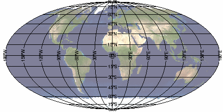

IDL's MAP function allows you to view more than 30 different map projections. This topic shows how to use the MAP function to view projections, and how to warp a map image to a map projection.
The following graphics are a sample of the map projections available in IDL.
|
|
|
|---|---|
The code shown below creates the maps shown above. You can copy the entire block and paste it into the IDL command line to run it.
; Create a map using the Mollweide projection.
mMoll = MAP('Mollweide', $
TITLE='Mollweide Projection')
; Create a map using the Sinusoidal projection.
mSinusoid = MAP('Sinusoidal', $
TITLE='Sinusoidal Projection')
; Create a map using the polar stereographic projection.
mPolStereo = MAP('PolarStereographic', $
TITLE='Polar Stereographic Projection')
The following examples use global image data. (This example data is available in the
examples/data
directory of your IDL installation.)
The first step is to view the image without a map projection:
The code shown below creates the graphic shown above. You can copy the entire block and paste it into the IDL command line to run it. The keywords used are explained in detail after the example code.
; Define the data by reading the image into IDL.
; creating the day variable to hold the data.
READ_JPEG, FILEPATH('Day.jpg', $
SUBDIR=['examples','data']), day
; Use the IMAGE function to display the image.
dayimage = IMAGE(day)
The next step is to view the data as a map, which warps the image to the map projection you want to use. The following image is the same data warped to the Mollweide map projection:

To make IDL understand that this image is map data, you must register the image, defining the map boundaries, units, location, and dimensions of the image.
; Define the data by reading the image into IDL,
; creating the clouds variable to hold the data.
READ_JPEG, FILEPATH('Day.jpg', $
SUBDIR=['examples','data']), clouds
; Use the IMAGE function to display the
; image warped to the map projection.
cloudmap = IMAGE(clouds, $
LIMIT=[-90,-180,90,180], GRID_UNITS=2, $
IMAGE_LOCATION=[-180,-90], IMAGE_DIMENSIONS=[360,180],$
TRANSPARENCY=50, MAP_PROJECTION='Mollweide')